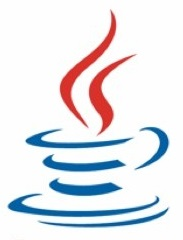
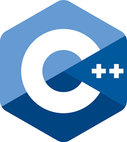

Francisco Rodrigo Espinoza López
"Amplio gusto por las tecnologías de información, en áreas como la auditoría, el análisis de riesgos y controles de acceso, pero principalmente en la seguridad de la información y el desarrollo de software, tanto backend como frontend"
Experiencia Académica
Licenciatura en Seguridad en Tecnologías de la Información
Facultad de Ciencias Físico Matemáticas
Universidad Autónoma de Nuevo León
2013-2018
Experiencia Laboral
Soporte de Producción
Avantech
Proveedor de British American Tobacco
Enero 2019 - Actualidad
Responsabilidades
- Soporte técnico y aplicativo a los módulos de producción
- Actualización y extracción de información de la base de datos para la generación de reportes
- Levantamiento, seguimiento y solución de tickets
- Realización y actualización de inventario de equipos de producción
Programas de Informática General
-

Microsoft Word
-

Microsoft Excel
-
Microsoft PowerPoint
Herramientas Informáticas
- Git
-

GitHub
Lenguajes de Programación
-

Java SE
-
Java FXML
-

C++
-
SQL Server
-
HTML
-
CSS
-
JavaScript
https://insight2.towerswatson.com/wix/p31017324.aspx?l=9